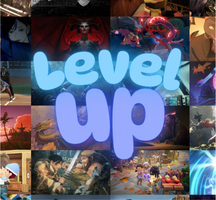
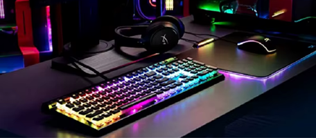

LevelUp
Historia dos jogos

Esse site irá informar a história dos jogos e os dispositivo..
Saiba Mais
Acesse os outros links:
Computadores
Foi criado entre 1943 e 1946

Os computadores antigamente eram feitos para..
Os computadores são essenciais para o dia a dia moderno. Com performance avançada, eles atendem a diversas necessidades, desde o trabalho até o lazer. A cada ano, novos modelos surgem, trazendo inovações que tornam as tarefas mais rápidas e eficientes, facilitando a vida dos usuários.
Jogos Digitais
Foram criada na década de 1970
Os jogos digitais foram criados enquan..
Os jogos digitais transformaram a forma de se divertir. Com gráficos impressionantes e jogabilidade envolvente, eles oferecem experiências únicas. De aventuras épicas a desafios rápidos, os jogos digitais atendem a todos os gostos e continuam a evoluir com novas tecnologias.